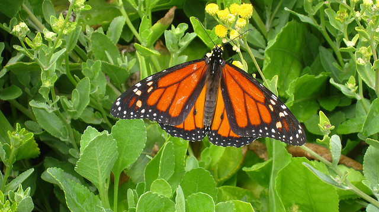
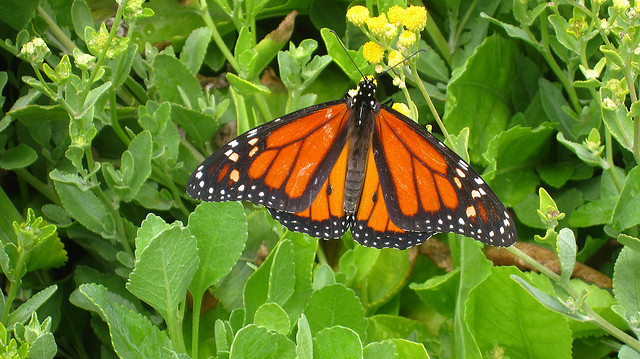

Laura Meighan
Download CV
J'ai réalisé les projets suivants lorsque j'étais en formation avec Khan Academy, W3school et le CNAM. J'ai aussi réalisé quelques bases de données sql et dont vous trouverez quelques exemples également sur cette page. Vous trouverez plus d'informations sur moi en cliquant ici
Pour réaliser cette première page web... j'ai utilisé HTML et CSS pour créer des liens internes et externes et appliquer à ma page web des styles différents avec CSS.
Quelques lignes de mon code... " var catPic = document.getElementById("cat-pic"); var onCatClick = function(e) { var stashePic = document.getElementById("mustache-pic"); stashePic.style.top = e.clientY+"px"; stashePic.style.left = e.clientX+"px"; }; catPic.addEventListener("click", onCatClick);". Cette page html est ludique et simple. L'utilisateur doit cliquer sur... le chat afin que ce dernier puisse récupérer sa moustache. Dans ce projet j'ai utilisé les propriétés de DOM afin que l'utilisateur puisse déplacer la moustache,(objectif: cliquer plusieurs fois pour placer la moustache au bon endroit!) Ma fonction onCatClick () contient 4 éléménts: 2 propriétés d'un "DOM event" et 2 coordonnées X et Y. Les deux évenements DOM et Les 2 coordonnées X et Y vont permettre d'une part d'intégrer des éléments HTML comme variables dans ma fonction onClick() contenue dans Javascript et d'autre part de rendre le click de l'utilisateur interactif. L'"event listener" permet de rappeler ma fonction onCatClick () à chaque nouveau click de l'utilisateur.
Quelques lignes de mon code..."var catEl = document.getElementById("cat"); var startTime = new Date().getTime(); var walkTheCat = function() { var currTime = new Date().getTime(); var secondsElapsed = ((currTime - startTime)/1000); var newLeft = 20+((currTime -startTime)/1000); var newLeft=100+secondsElapsed*20; catEl.style.left=newLeft+"px"; if (newLeft<350) { window.requestAnimationFrame(walkTheCat);} }; walkTheCat();". Pour réaliser cette animation j'ai utilisé... HTML, CSS, DOM "animation" et javascript. Cet exemple de code montre que l'animation du chat est définie par une fonction. Pour indiquer toute modification de la fonction au navigateur il faut utiliser "Window requestAnimationFrame". Le sens de la marche du chat est un exemple de fonctionnement de l'animation. Si je veux également minuter sa marche j'utilise la méthode "window.requestAnimationFrame" pour indiquer ce changement au navigateur. Le navigateur prendra en compte cette modification avant son actualisation. Cette méthode fait fonctionner l'animation en continu à chaque fois que la fonction (walkTheCat) est appellée.
Quelques lignes de mon code..."$("#quiz-form").on("submit",)"; ""eventpreventDefault";"var $answer = $("#trivia-answer"); var answer = $answer.val(); if (answer ==="resig"){ $("#result").text("You did it!") } else{ $("#result").text("Try again!") }". Pour développer ce quizz j'ai d'abord créé un formulaire puis... j'ai utilisé un "event listener" de DOM. Le code montre que l"event listener" va générer un évenement à chaque fois que l'utilisateur cliquera sur le bouton "answer". Dans ce jeu l'évenement généré dépendra du choix séléctionné par l'utilisateur. Ce code permet à l'utilisateur de rester sur la page car javascript intercepte les données recueillies sans l'utilisation d'un serveur exterieur. Le variable $answer store la collection des réponses que l'utilisateur peut choisir. Plus précisément le fonctionnement de la méthode Jquery "val" est structuré sur le choix sélectionné par l'utilisateur: J'ai ajouté dans mon code des conditions afin que l'utilisateur puisse savoir si sa réponse est correcte:
Quelques lignes de mon code... "$("#game").hover( function() { $("#img").show(1000); }, function() { $("#img").hide(1000); } );" J'ai construit ce jeu sur sur la base d'un questionnaire html. Celui-ci est... ludique et pédagogique. Il n'a que 3 catégories contenant un nombre de mots restreint mais les possibilités sont infinies, avec Html, Css et Javascript. C'est Javascript et Jquery qui m'ont permis de rendre ce jeu interactif.
Pendant ma formation j'ai réalisé quelques bases de données SQL. Vous pourrez voir quelques exemples en cliquant sur le lien dans la colonne de droite. sql_1: Dans cet exemple j'ai crée une base de données pour un magasin fictif et inséré des valeurs avec "CREATE TABLE", "INSERT" and "VALUES"; J'ai aussi utilisé "SELECT", "FROM", "WHERE" et "ORDER BY" ... pour lancer des requêtes et selectionner par commande ou par client par exemple. sql_2: Cette base de données contient un ensemble de données concernant une liste d'étudiants et leurs moyenne. J'ai ajouté aux requêtes habituelles des conditions en utilisant "CASE" puis "WHEN", "THEN", "ELSE". sql_3: Le schéma de cette base de données relationnelle contient une liste de client(e)s avec leurs IDs, noms et emails et une deuxième liste avec les IDs des commandes et des client(e)s, l'objet commandé et son prix. Dans cet exercice j'ai lancé une requête pour avoir la liste de chaque client(e) avec son nom associé à son email et à l'objet commandé et associé son prix. En plus des requêtes normales j'ai donc utilisé LEFT OUTER JOIN pour joindre la liste des clients avec la liste de leurs commandes, incluant aussi les client(e)s n'ayant pas passé de commandes. J'ai lancé ensuite une autre requête et j'ai ajouté ORDER BY pour placer chaque client(e) dans le tableau selon le montant dépensé: Dans ce cas ci, ORDER BY total_money_spent desc, le desc indique un ordre descendant. sql_4: Dans cet exercice j'ai modifié une rangée déjà créée en utilisant ALTER TABLE, SET, ADD, FROM et UPDATE ou DELETE.
Cliquez sur ce lien pour accéder à mon cv
J'ai suivi en 2023 une formation de développeur web ce qui m'a permis de travailler avec HTML5, css3, JavaScript et Jquéry. J'ai réalisé pendant cette formation de nombreux projets dont vous trouverez les liens plus haut sur cette page. La conception "front-end" des sites web m'intéresse et peut représenter un vrai défi. Il faut parfois faire des choix et accomoder l'aspect créatif, pratique et fonctionnel du site afin de privilégier l'expérience utilisateur et la faisabilité du projet. J'utilise aussi Gimp 2.10, un logiciel de manipulation d'images. Vous trouverez sur l'en-tête de cette page un de mes dessins modifié avec cet outil: Eclairage ajouté et style "photo analogique" appliqué au niveau des bordures.
 

.png)